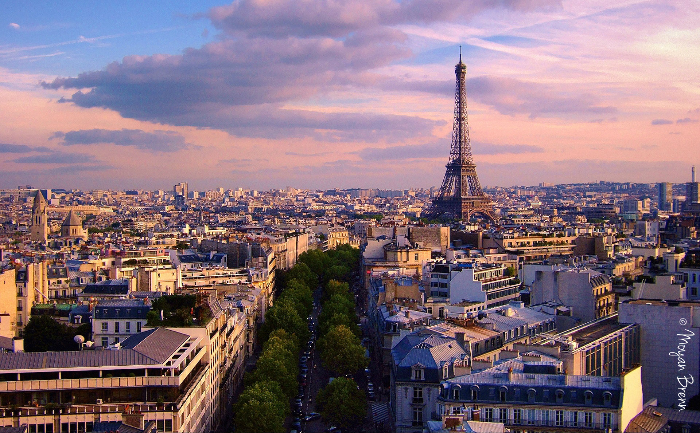
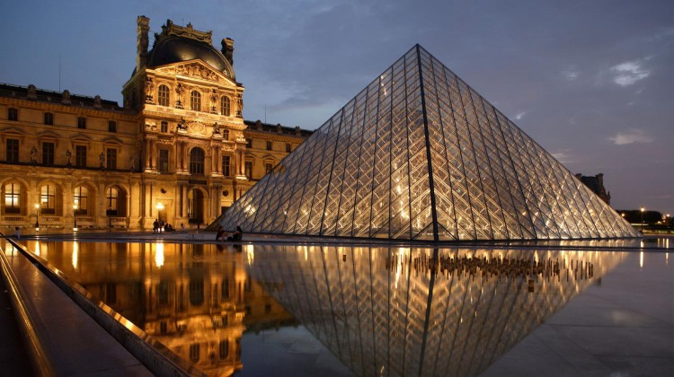

Страны Европы |
|---|
ФранцияФранция - официальное название Францу́зская Респу́блика (фр. République française, [ʁe.py.blik fʁɑ̃.sɛz] Информация о файле слушать) — трансконтинентальное государство, включающее основную территорию в Западной Европе и ряд заморских регионов и территорий. Столица — Париж. Девиз Республики — «Свобода, Равенство, Братство», её принцип — правление народа, народом и для народа. Название страны происходит от этнонима древнегерманского племени франков, несмотря на то, что большинство населения Франции имеет смешанное галло-романское происхождение и говорит на языке романской группы.Франция является ядерной державой и одним из пяти постоянных членов Совета Безопасности ООН. С 1950-х годов — одно из государств, участвующих в создании Европейского союза. Законодательный орган — двухпалатный парламент (Сенат и Национальное собрание). Административно-территориальное деление: 18 регионов (13 в метрополии и 5 заморских регионов), включающих 101 департамент (96 в метрополии и 5 заморских департаментов), 5 заморских сообществ и 3 административно-территориальных образования с особым статусом. Достопримечательности страныЛувр (Louvre Museum)Лувр является одним из крупнейших и наиболее важных музеев в мире, в нем располагается одна из лучших коллекций изобразительного искусства в мире, коллекция включает в себя, такие мировые шедевры как Мона Лиза Леонардо де Винчи, Венера Милосская, Умирающий раб Микеладжело и могие другие работы великих мастеров. Музей имеет коллекцию из более чем одного миллиона произведений искусства, из которых около 35 000 находятся на постоянной выставке, в трех крылья бывшего дворца. Музей имеет разнообразную коллекцию, начиная от античности и до середины девятнадцатого века. Музей расположен в обширном дворце Лувр, расположенный в 1-м округе, в центре Парижа. Музей находится в бывшем царском дворце французских королей. В 1793 году, во время французской революции, Лувр стал Национальным музеем искусства и королевская коллекция была открыта для публики. |